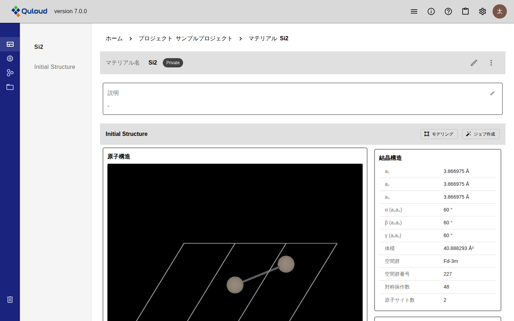
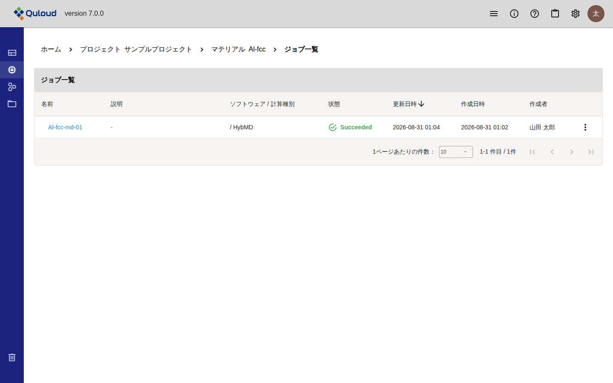
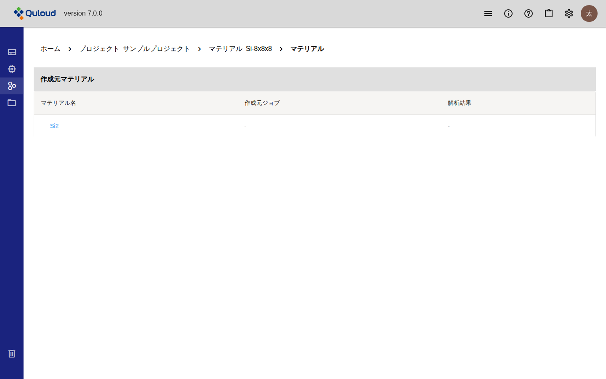
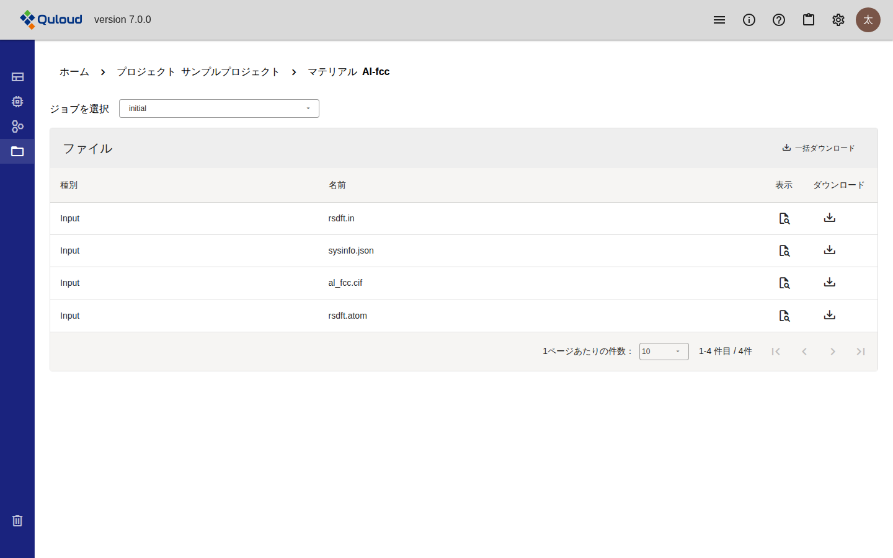

7. Material 詳細画面
注釈
本章は Quloud Ver.7.0 を対象としています。記載内容の確認日は 2026 年 9 月 8 日です。
7.1. 概要
Material 詳細画面は、1 つの Material に関わるものをすべてまとめた画面です。 プロジェクトのマテリアル一覧、またはホーム画面の「マテリアル」タブから 名前を押すと開きます。
画面は左のメニューで 4 つに切り替わります。
図 7.1 左のメニュー（ホバーで展開した状態）
メニュー |
内容 |
|---|---|
プロパティ |
初期構造と、登録した Property が並びます。既定で開くペインです。 |
ジョブ |
この Material から作られた Job の一覧と、Job の詳細です。 |
マテリアル |
この Material の作成元と、この Material から作られた Material です。 |
ファイル |
入出力ファイルの一覧です。 |
削除 |
Material を削除します。 |
注釈
左のメニューはアイコンだけの状態で表示されており、マウスを乗せると項目名が 現れます。
7.2. プロパティ
既定で開くペインです。Material の名前・説明と、初期構造が並びます。

図 7.2 プロパティのペイン
7.2.1. 名前と説明を変える
「マテリアル名」の行と「説明」の枠にある鉛筆のアイコンを押すと、その場で編集できます。 Enter で確定、Esc で取り消しです。
7.2.2. 初期構造を見る
「Initial Structure」には、登録した原子構造が 3D で表示されます。
ドラッグで向きを変えられます。マウスホイールで拡大・縮小できます
右上の拡大アイコンで画面いっぱいに表示できます
右側には構造から計算された情報が並びます。結晶では「結晶構造」（格子定数・ 空間群など）、分子では「分子構造」が表示され、いずれにも「化学構造」と 「原子情報」が付きます
見出しの右にある 2 つのボタンから、次の操作に進みます。
モデリング — 構造を加工して別の Material を作ります（モデリング の章）
ジョブ作成 — この構造で計算 Job を登録します（計算 Job の登録 の章）
7.2.3. 登録した Property
初期構造の下に、Property として登録した結果がグループごとに並びます。 登録の方法と操作は Property の章で説明します。
7.3. ジョブ
この Material から作られた Job の一覧です。

図 7.3 ジョブのペイン（ジョブ一覧）
名前を押すと、その Job の詳細に移ります。詳細画面の中身は次の章で説明します。
節 |
説明している章 |
|---|---|
ジョブ概要・計算リソース |
計算 Job の実行 の章 |
Results |
計算結果の可視化 の章 |
入力 |
計算 Job の登録 の章 |
ログ・ファイル |
入出力ファイルとログ の章 |
各行の右端の「⋮」から、その Job に対する操作ができます。
項目 |
動作 |
|---|---|
実行 |
Status が「Registered」の Job にだけ出ます（計算 Job の実行 の章）。 |
キャンセル |
Status が「Submitted」「Prepared」「Running」の Job にだけ出ます。 |
説明 |
Job の説明を編集します。 |
編集 |
ジョブ名を編集します。 |
削除 |
Job を削除します。 |
注釈
Ver.6.1.2 以前に作成した Job と、Ver.7.0 で作成した Job とでは、Job 詳細画面の 「入力」の表示が異なります。詳しくは 仕様 の章をご参照ください。
7.4. マテリアル
この Material が何から作られたか、この Material から何が作られたかを表示します。

図 7.4 マテリアルのペイン（作成元マテリアル）
節 |
内容 |
|---|---|
作成元マテリアル |
この Material のもとになった Material です。モデリングで作った場合は もとの Material が、計算結果から保存した場合はその Job と結果も並びます。 |
派生マテリアル |
この Material から作られた Material です。 |
該当するものが無い節は表示されません。
7.5. ファイル
Material と Job の入出力ファイルの一覧です。

図 7.5 ファイルのペイン
上部の「ジョブを選択」で、Material 自身（
initial）とこの Material の Job を切り替えますJob を選ぶと「入力ファイル」「出力ファイル」の切り替えが現れます
「表示」でファイルの中身を確認できます。「ダウンロード」で 1 件ずつ、 「一括ダウンロード」で ZIP にまとめて取得できます
ファイルの中身については 入出力ファイルとログ の章で説明します。
注釈
ファイルを編集できるのは、Status が「Registered」の Job の入力ファイルだけです。 Material 自身のファイルは Ver.7.0 では編集できません（閲覧のみ）。 実行前の Job の入力ファイルを直接書き換えれば、画面に用意されていない 細かい設定でも計算できます。
7.6. Material の移動と削除
7.6.1. 他のプロジェクトへ移動する
「マテリアル名」の行の右端にある「⋮」から「他のプロジェクトへ移動」を選び、 移動先のプロジェクトを指定します。その Material を使っている Job も一緒に 移動します。
7.6.2. 削除する
左のメニューのいちばん下にある「削除」、または「マテリアル名」の行の「⋮」から 「削除」を選びます。
警告
Material を削除すると、その Material を使っている Job もすべて削除されます。 削除ダイアログに対象の Job が一覧されるので、確認のチェックを入れてから 「削除」を押します。
参加していないプロジェクトの Job がその Material を使っている場合は削除できません。 そのプロジェクトのメンバーに依頼してください。